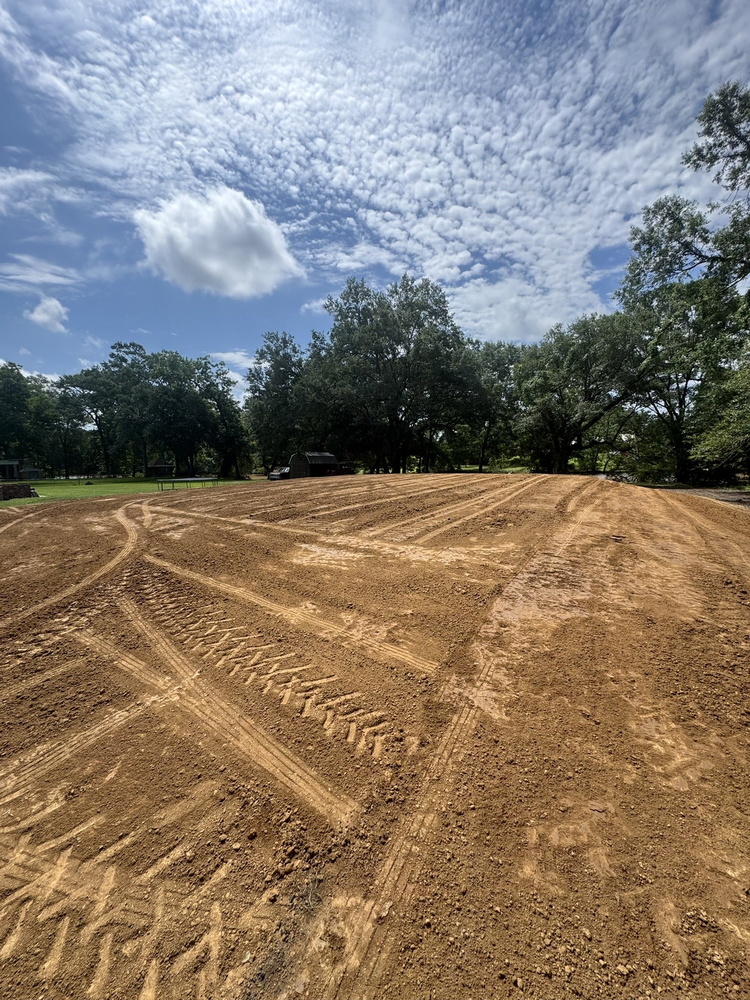
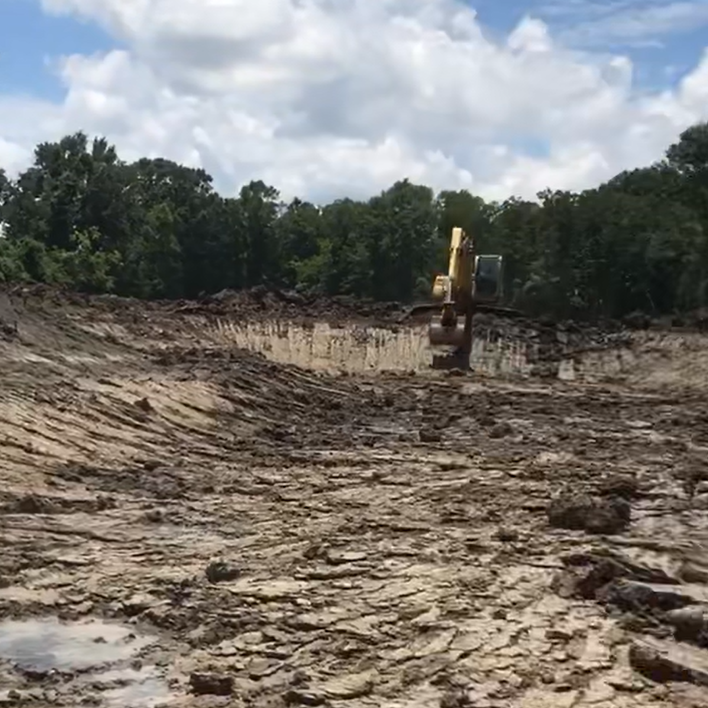
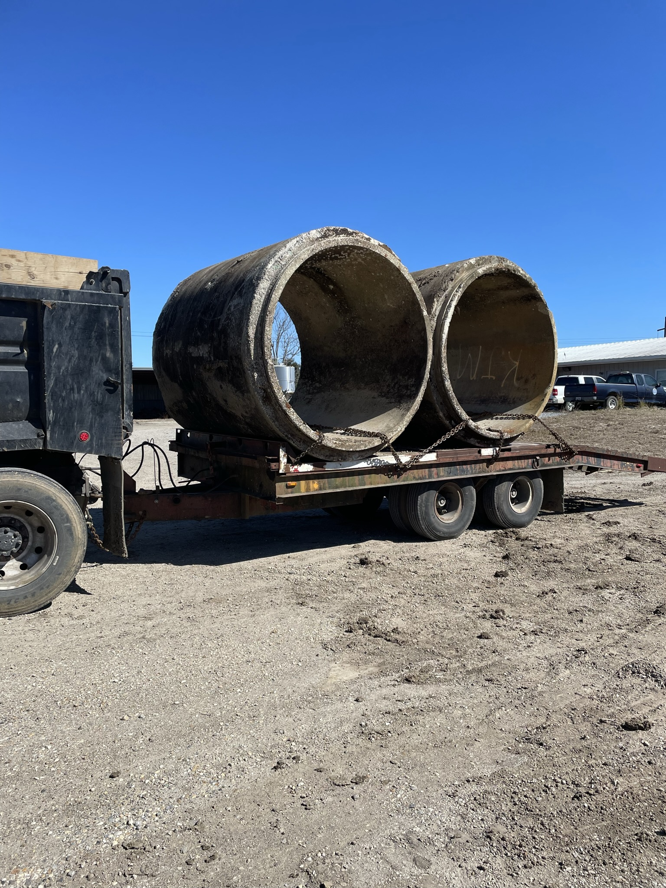
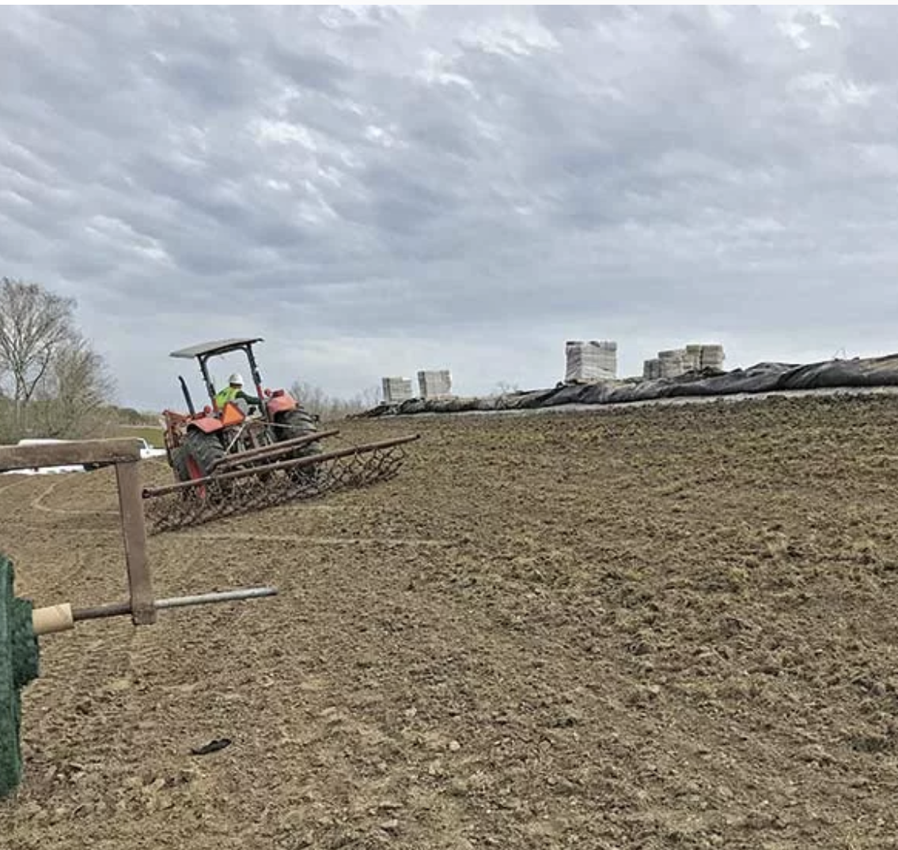
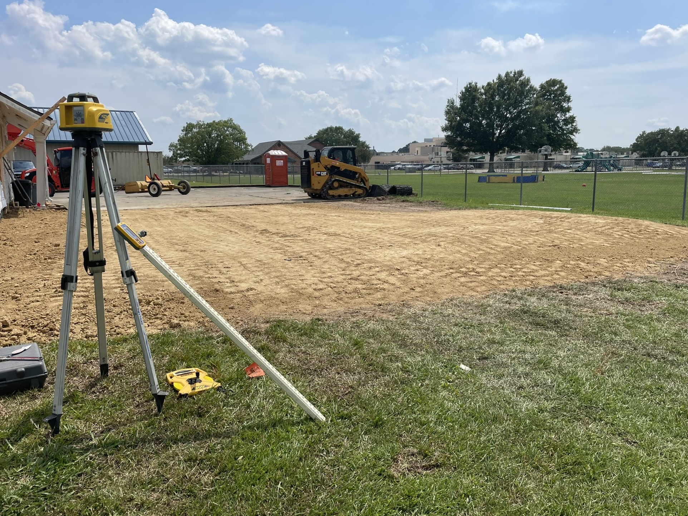
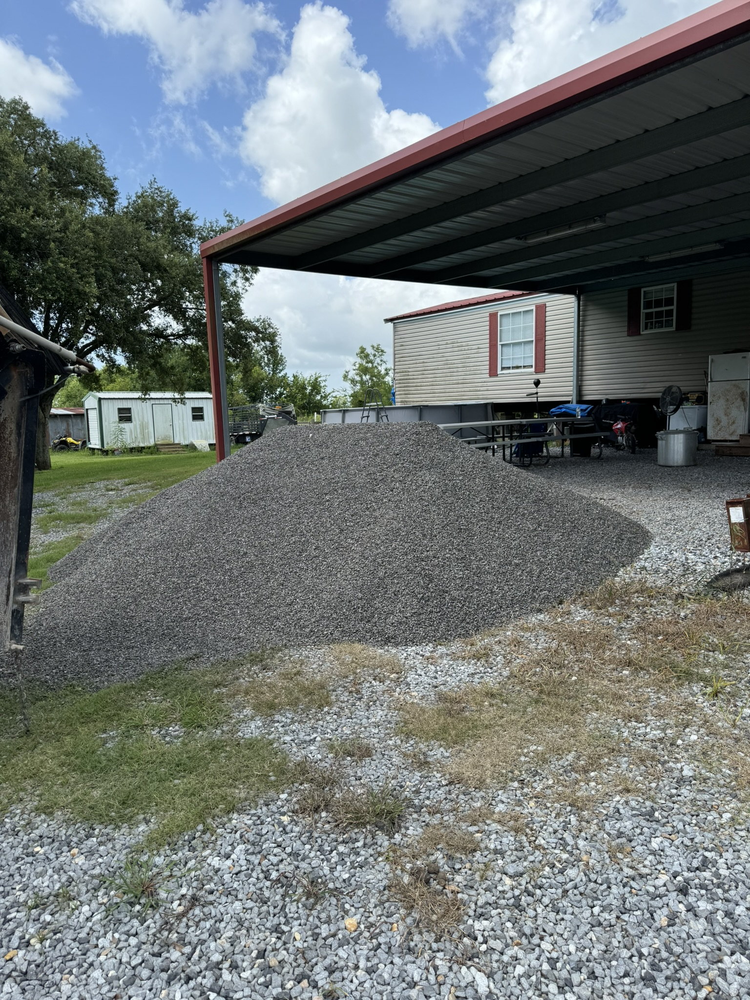
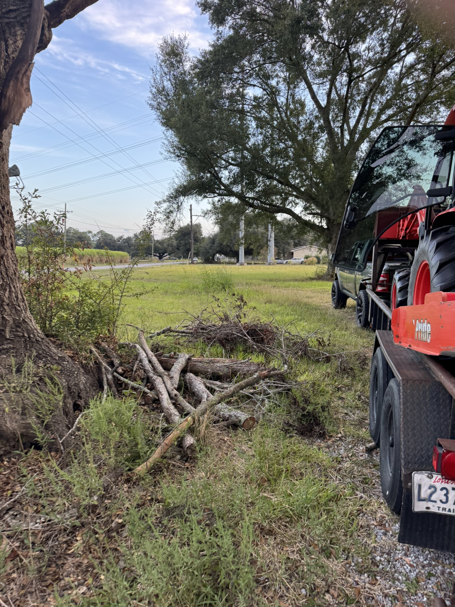
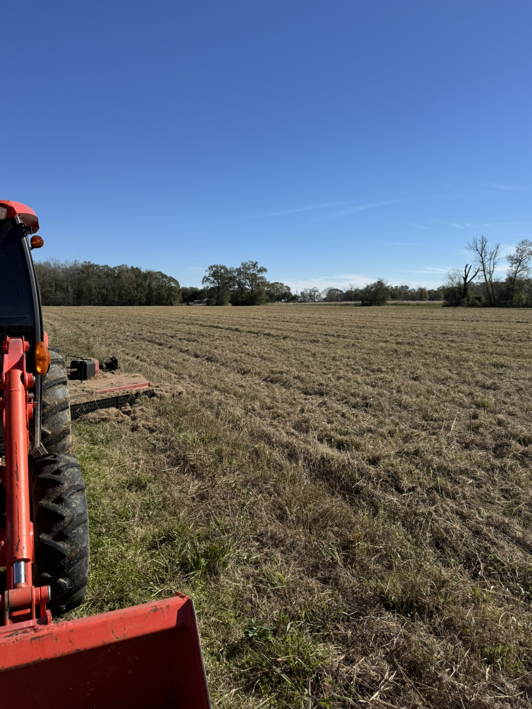
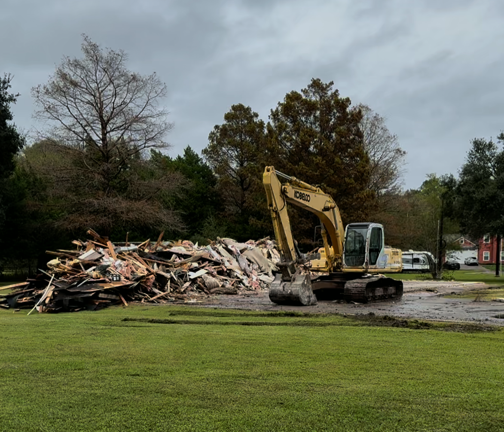

Expert dirt work solutions tailored to your project needs

Professional site pad construction is the foundation of any successful building project. We specialize in creating level, properly compacted pads for residential, commercial, and industrial developments throughout the Acadiana area.
Our experienced operators use state-of-the-art equipment to ensure precise grading and proper drainage, meeting all local building codes and engineering specifications. From small residential pads to large commercial developments, we deliver quality results on time and within budget.
Whether you need a farm pond for livestock, an irrigation reservoir, or a recreational fishing pond, Coastal Construction Services has the expertise to bring your vision to life. We handle every aspect of pond construction from initial design to final excavation.
Our team understands Louisiana's unique soil conditions and water table challenges. We design ponds with proper depth, slope, and drainage to ensure longevity and functionality. Each pond is custom-built to meet your specific needs and property characteristics.


Proper drainage is critical in Southern Louisiana, and quality culvert installation is key to managing water flow on your property. We install culverts of all sizes for driveways, roads, and drainage systems, ensuring proper water management and preventing erosion.
Our team carefully assesses your property's drainage needs and installs culverts with the correct sizing, placement, and grade to handle Louisiana's heavy rainfall. We work with concrete, metal, and plastic culverts depending on your specific requirements and local regulations.
Living in Southern Louisiana means understanding the importance of flood protection. We construct levees and earthwork structures designed to protect your property from flooding and water damage. Our levees are built to Louisiana standards and engineered for maximum protection.
From small property levees to larger agricultural flood control systems, we have the equipment and expertise to build reliable earthwork barriers. We ensure proper compaction, height, and slope to provide effective water management for your property.


Precision land leveling is essential for proper drainage, construction preparation, and agricultural use. We use advanced GPS-guided equipment to achieve exact grades and slopes, ensuring your land is perfectly prepared for its intended purpose.
Whether you're preparing land for building, farming, or improving drainage, our land leveling services create the optimal foundation. We handle projects of all sizes, from residential lots to large agricultural fields, with the same attention to detail and precision.
Need quality materials delivered to your job site? Coastal Construction Services provides reliable transportation of dirt, limestone, gravel, and other essential construction materials throughout the Acadiana area. We ensure timely delivery of the right materials in the quantities you need.
Our fleet of trucks and experienced drivers handle material delivery with professionalism and efficiency. Whether you need a single load or ongoing material supply for a large project, we coordinate deliveries to keep your project moving forward on schedule.


Transform overgrown or wooded land into productive pasture with our comprehensive land clearing services. We remove trees, stumps, brush, and debris to create clean, usable land for livestock, farming, or development.
Our clearing process is thorough and efficient, preparing your land for immediate use. We can clear land to your exact specifications, whether you need complete clearing or selective tree removal. All debris is properly disposed of, leaving you with ready-to-use land.
Keep your property maintained and accessible with our heavy-duty bushhogging services. We tackle thick brush, tall grass, and overgrown vegetation that regular mowing equipment can't handle. Perfect for maintaining large properties, rights-of-way, and reclaiming overgrown land.
Our industrial-grade bushhogging equipment cuts through dense vegetation quickly and efficiently. Whether you need regular maintenance or one-time clearing of severely overgrown areas, we have the power and experience to get the job done right.


When structures need to come down, Coastal Construction Services provides safe, efficient demolition services. We handle everything from small outbuildings to larger structures, ensuring complete removal and proper disposal of all materials.
Our demolition services include careful planning to protect surrounding structures and utilities. We handle all aspects of the demolition process including permits, safety measures, debris removal, and site cleanup, leaving you with a clean slate ready for your next project.
Contact us today for a free quote on your project